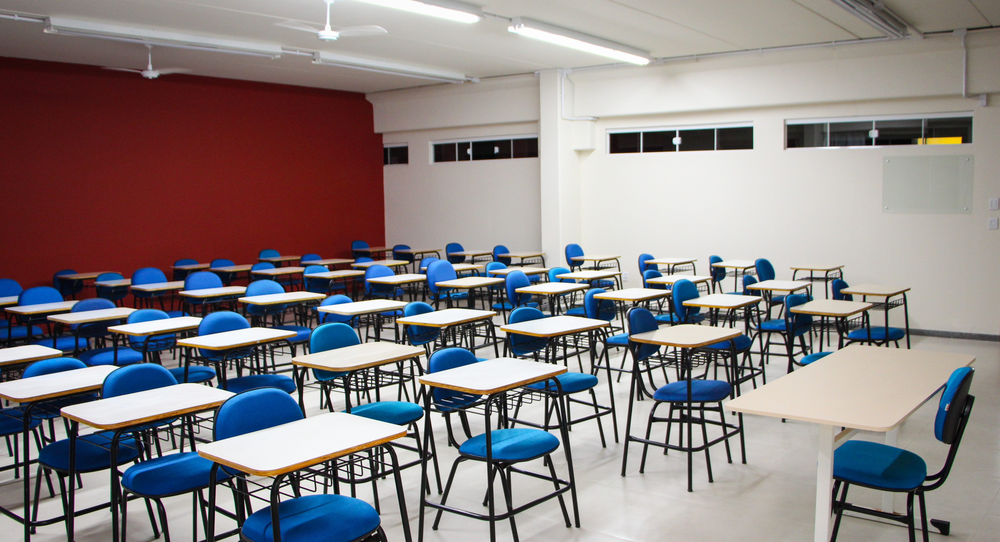

Texto Grande que pode representar nome da escola
O ambiente é organizado de forma simples e funcional. Em cada canto da parede do fundo, dois armários pequenos que guardam os materiais coletivos da turma. Logo acima deles, dois quadros de avisos azuis são fixados na parede, sendo um menor que o outro.
O chão é ocupado por mesas e cadeiras de cores vibrantes – as mesas são azuis, e as cadeiras têm assentos e encostos coloridos, e contrastando com a praticidade de suas patas metálicas na cor cinza. À frente da sala está o quadro negro, para uso de giz e canetas. Por trás da mesa dos alunos, uma janela grande permite a entrada de luz natural, iluminando o espaço e oferecendo conforto para as crianças.

O ambiente é organizado de forma simples e funcional. Em cada canto da parede do fundo, dois armários pequenos que guardam os materiais coletivos da turma. Logo acima deles, dois quadros de avisos azuis são fixados na parede, sendo um menor que o outro.
O chão é ocupado por mesas e cadeiras de cores vibrantes – as mesas são azuis, e as cadeiras têm assentos e encostos coloridos, e contrastando com a praticidade de suas patas metálicas na cor cinza. À frente da sala está o quadro negro, para uso de giz e canetas. Por trás da mesa dos alunos, uma janela grande permite a entrada de luz natural, iluminando o espaço e oferecendo conforto para as crianças.
Copyright © 2025 Ifsul. All rights reserved.